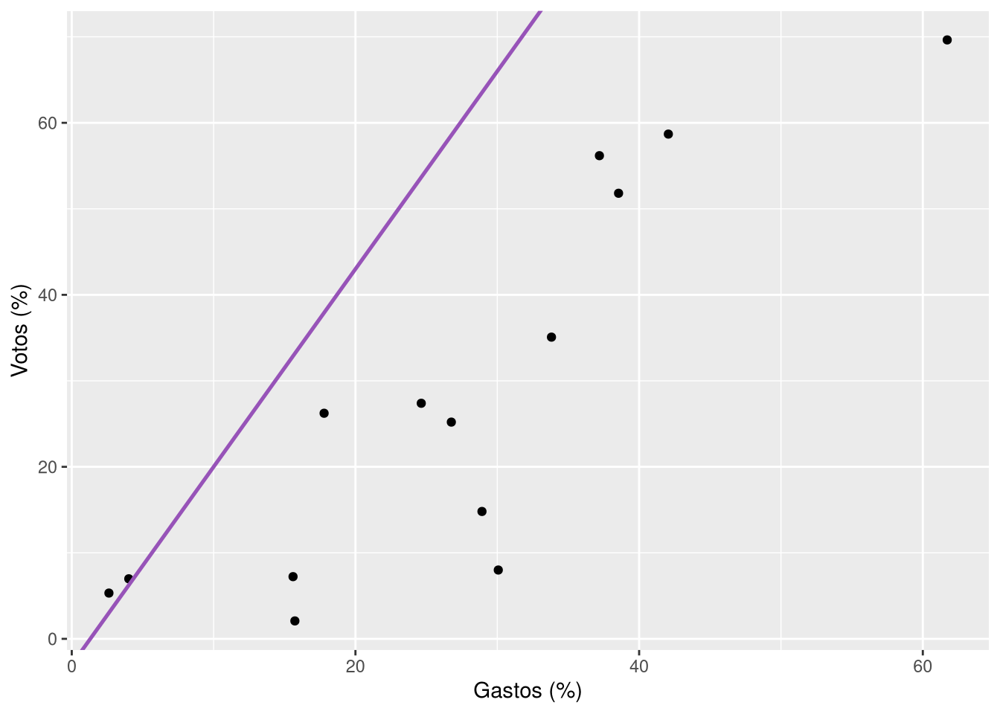

install.packages("modelsummary")
install.packages("gt")5 Análise
Depois de carregar, manipular e visualizar as informações de uma base de dados, temos uma boa noção do que ela nos tem a dizer: sabemos quais são as suas variáveis, como se distribuem e como se relacionam. Em pesquisas acadêmicas, entretanto, isso raramente basta. Frequentemente, precisamos quantificar as características de nossos dados e testar hipóteses sobre as relações entre as variáveis observadas. Produzir esses resumos quantitativos usando R é o que cobriremos neste capítulo final.
Começaremos o nosso percurso passando brevemente pelo básico sobre estatísticas descritivas, isto é, medidas numéricas que servem para resumir as características de uma variável. Em seguida, veremos como estimar modelos de regressão linear simples em R para testar hipóteses sobre a relação entre duas variáveis. Por fim, mostraremos algumas ferramentas que facilitam a exibição e exportação dessas e de outras análises. Seguindo nossa abordagem geral, focaremos no uso de prático de algumas poucas ferramentas que, por serem versáteis, podem ser usadas em uma grande variedade de projetos de análise de dados.
Antes de avançar, certifique-se de ter os pacotes e bases de dados necessários. Para criar e exportar tabelas em formato adequado para publicações, usaremos os pacotes gt e modelsummary, que podem ser instalados com o seguinte código:
Para carregar os pacotes que usaremos, basta executar:
library(gt)
library(tidyverse)
library(modelsummary)Como forma de aplicar os conceitos que veremos neste capítulo, usaremos uma pequena base de dados que contém os votos válidos e o percentual de gastos de campanha de candidaturas aos governos estaduais em 2022 no primeiro turno em alguns estados específicos (GO, MG, RJ e PR). Esta base está disponível no repositório de dados deste livro em formato delimitado por ponto e vírgula (governadores.csv). Para carregá-la, podemos usar a função read_csv2() do pacote:
gov <- read_csv2("governadores.csv")Executado o código, a base carregada salva no objeto gov tem 14 linhas com as seguintes variáveis:
uf: unidade da federação;candidatura: nome da(o) candidata(o);partido: partido da candidatura;pct_gastos: percentual gasto na campanha da candidatura em relação às demais candidaturas;pct_votos: percentual de votos válidos no 1º turno da eleição para governo do estado.
5.1 Estatísticas descritivas
Como vimos no capítulo anterior, uma das primeiras coisas que fazemos ao analisar um conjunto de dados é inspecionar suas características, o que pode ser feito por meio de gráficos. Há um problema, no entanto: gráficos não nos oferecem descrições precisas das características de uma variável – o que normalmente é demandado em publicações acadêmicas. Embora gráficos sejam ferramentas essenciais em qualquer projeto, saber como resumir as características de uma variável de forma precisa é um complemento necessário.
A chave para descrever de forma precisa nossas variáveis é usarmos algumas medidas numéricas que resumam a distribuição dos valores que elas assumem. Pense, por exemplo, em uma variável que meça a altura de um grupo de pessoas. Os valores dessa variável poderiam ser estes:
| Pessoa | Altura (metros) |
|---|---|
| 1 | 1.60 |
| 2 | 1.70 |
| 3 | 1.75 |
| 4 | 1.80 |
| 5 | 1.85 |
| 6 | 1.90 |
Uma forma de descrever essa informação seria, naturalmente, listar cada uma das alturas individuais, isto é, dizer que a pessoa 1 tem 1,60, a 2 tem 1,70, e assim por diante. Caso tenhamos muitas observações, contudo, a descrição deixa de fazer sentido e, no lugar, precisamos de algo mais sintético. Um exemplo? Note que a altura máxima que vimos acima é 1.9 e a mínima é 1.6. Essas duas medidas já nos dão uma ideia geral de que todas as informações estão contidas entre estes limites mínimo e máximo. Mais, podemos calcular a média das alturas, que é 1.8, para ter uma ideia de qual é altura “típica” de uma pessoa da turma; e, finalmente, podemos calcular o desvio padrão, que é 0.11, para ter uma ideia do quanto as alturas individuais se distanciam da média. Munido dessas informações, temos uma boa ideia da distribuição das alturas do grupo de pessoas, tenha ele 6 ou 600 integrantes.
Na Estatística, tais medidas são conhecidas como estatísticas descritivas e são usadas tanto para descrever tendências centrais (e.g., média, mediana, moda) quanto para descrever a dispersão dos valores (e.g., desvio padrão, variância, mínimo, máximo, etc.). A depender do tipo de variável que estamos analisando, algumas dessas medidas são mais adequadas que outras: para variáveis numéricas (i.e., contínuas), por exemplo, a média e o desvio padrão são medidas geralmente são utilizadas; já para variáveis categóricas (e.g., sexo), a moda, isto é, o valor mais frequente, é uma medida útil.
Estatísticas descritivas
Uma estatística descritiva é um número único que condensa uma propriedade de uma variável (Kellstedt e Whitten 2018, cap. 6). Estatísticas descritivas comuns incluem a média, a mediana, a moda, o desvio padrão, a variância, o valor mínimo, o valor máximo, entre outros.
Em R, podemos calcular essas e outras estatísticas descritivas usando funções específicas. Para exemplificar, vamos calcular algumas estatísticas descritivas para a variável pct_gastos da base gov. Para calcular a média, que já vimos no Capítulo 3, usamos a função mean():1
mean(gov$pct_gastos)[1] 27.10714Outras estatísticas descritivas podem ser calculadas de forma similar. Seguem algumas das mais comuns:
median(): mediana, que é o valor que divide a distribuição em duas partes iguais;var(): variância, que é a média dos quadrados dos desvios em relação à média;sd(): desvio padrão, que é a raiz quadrada da variância;min(): mínimo;max(): máximo;range(): intervalo, que é a diferença entre o máximo e o mínimo;
Por exemplo:
median(gov$pct_gastos)[1] 27.84sd(gov$pct_gastos)[1] 15.68703min(gov$pct_gastos)[1] 2.62max(gov$pct_gastos)[1] 61.72Com esse conjunto de estatísticas calculadas, já temos uma boa ideia da distribuição da variável pct_gastos da base gov. Para termos uma ideia mais completa, podemos usar a função summary(), que calcula várias estatísticas descritivas de uma variável de uma só vez:
summary(gov$pct_gastos) Min. 1st Qu. Median Mean 3rd Qu. Max.
2.62 16.25 27.84 27.11 36.35 61.72 Os números anteriores formam uma espécie de retrato: média e mediana indicam que o centro da distribuição está em torno de 27, isto é, candidaturas típicas tendem a gastar em torno desse valor percentual; valores mínimo e máximo são de 2.62 e 61.72, respectivamente, o que nos mostra os limites de gastos registrados nos nossos dados; e, finalmente, os primeiro e terceiro quantis mostram que a maioria dos gastos percentuais registrados na nossa base está situada entre os valores de 16.245 e 36.355.
Quantis
Quantis, ou quartis, são estatísticas descritivas que dividem uma distribuição em quatro partes. O primeiro quartil, às vezes chamado de Q1, divide todos os valores de uma variável em duas partes iguais, sendo que 25% dos valores estão abaixo dele e, 75%, acima; Q3, por sua vez, é o valor que divide a distribuição com 75% dos valores abaixo dele e 25% acima; e, finalmente, o Q2 é a mediana, que divide a distribuição com 50% dos valores acima, e 50% abaixo, dela.
5.1.1 Calculando múltiplas estatísticas descritivas
Calcular várias estatísticas de uma só vez é algo normal em pesquisas. Por exemplo, suponha que queremos calcular a média e o desvio padrão das variáveis pct_gastos e pct_votos da base gov. Para tanto, podemos usar a função summarise() do pacote dplyr, que já vimos no Capítulo 3:
gov |>
summarise(media_gastos = mean(pct_gastos),
desvio_gastos = sd(pct_gastos),
media_votos = mean(pct_votos),
desvio_votos = sd(pct_votos))# A tibble: 1 × 4
media_gastos desvio_gastos media_votos desvio_votos
<dbl> <dbl> <dbl> <dbl>
1 27.1 15.7 28.2 22.85.1.2 Estatísticas descritivas por grupo
Outra tarefa comum é calcular estatísticas descritivas de uma variável para grupos específicos. Imagine, por exemplo, que queremos calcular a média e desvio padrão das variáveis pct_gastos e pct_votos para cada um dos três estados incluídos na base gov. Como fazemos isso? Simples: por meio das funções group_by() e summarise() do pacote dplyr, que já vimos no Capítulo 3. Depois de agruparmos a base por uf, calculamos as estatísticas para cada grupo com summarise:
gov |>
group_by(uf) |>
summarise(media_gastos = mean(pct_gastos),
desvio_gastos = sd(pct_gastos),
media_votos = mean(pct_votos),
desvio_votos = sd(pct_votos))# A tibble: 4 × 5
uf media_gastos desvio_gastos media_votos desvio_votos
<chr> <dbl> <dbl> <dbl> <dbl>
1 GO 24.6 14.6 24.7 19.6
2 MG 28.9 11.6 32.8 24.6
3 PR 31.7 26.0 32.6 34.2
4 RJ 24.8 16.5 24.8 24.6Note que a principal diferença aqui foi o uso de group_by(uf) para dizer ao R que operações de resumo deveriam ser feitas para cada um dos grupos definidos pela variável uf.
5.1.3 Transformando tabelas de estatísticas descritivas
Quando calculamos estatísticas descritivas para grupos, o resultado é uma tabela com uma linha para cada grupo e uma coluna para cada estatística calculada. Se quisermos alterar essa disposição de informações, podemos usar os princípios tidy que vimos no Capítulo 3. Por exemplo, para obtermos uma tabela com uma linha para cada estatística calculada e uma coluna para cada grupo, podemos usar as funções pivot_longer() e pivot_wider() do pacote tidyr em duas etapas. Primeiro, usamos pivot_longer() para alongar as colunas com estatísticas:
tab_longa <- gov |>
group_by(uf) |>
summarise(media_gastos = mean(pct_gastos),
desvio_gastos = sd(pct_gastos),
media_votos = mean(pct_votos),
desvio_votos = sd(pct_votos)) |>
pivot_longer(cols = -uf, names_to = "estatistica", values_to = "valor")
tab_longa# A tibble: 16 × 3
uf estatistica valor
<chr> <chr> <dbl>
1 GO media_gastos 24.6
2 GO desvio_gastos 14.6
3 GO media_votos 24.7
4 GO desvio_votos 19.6
5 MG media_gastos 28.9
6 MG desvio_gastos 11.6
7 MG media_votos 32.8
8 MG desvio_votos 24.6
9 PR media_gastos 31.7
10 PR desvio_gastos 26.0
11 PR media_votos 32.6
12 PR desvio_votos 34.2
13 RJ media_gastos 24.8
14 RJ desvio_gastos 16.5
15 RJ media_votos 24.8
16 RJ desvio_votos 24.6Tudo o que fizemos aqui foi indicar que queremos manter a coluna uf e alongar as demais (cols = -uf) para que cada uma delas vire uma linha (names_to = "estatistica") e que seus valores sejam posicionados em uma nova coluna (values_to = "valor"). Isso feito, podemos usar pivot_wider() para transformar a coluna uf em múltiplas colunas, uma para cada estado:
tab_final <- tab_longa |>
pivot_wider(names_from = uf, values_from = valor)
tab_final# A tibble: 4 × 5
estatistica GO MG PR RJ
<chr> <dbl> <dbl> <dbl> <dbl>
1 media_gastos 24.6 28.9 31.7 24.8
2 desvio_gastos 14.6 11.6 26.0 16.5
3 media_votos 24.7 32.8 32.6 24.8
4 desvio_votos 19.6 24.6 34.2 24.6Nem sempre é intuitivo saber quando usar pivot_longer() e pivot_wider(), e em qual ordem, mas, com um pouco de prática, é fácil pegar os padrões mais recorrentes de transformação de acordo com os princípios tidy – caso queira praticar mais um pouco, os exercícios do Capítulo 3 são um bom lugar para começar.
5.1.4 Exportando resultados
Uma vez calculadas algumas estatísticas descritivas, a sequência natural é exportá-las para um arquivo de texto ou planilha para uso posterior. Uma forma fácil de fazer isso é por meio da função write_csv() do pacote readr, que já vimos no Capítulo 2:
tab_final |>
write_csv("minha_tabela.csv")O ponto negativo dessa abordagem é que, por padrão, a função write_csv() não aplica nenhuma formatação ao resultado. É por essa razão que sugerimos usar o pacote gt – um pacote que facilita a criação modular de tabelas em HTML, LaTeX ou documentos de texto – para salvar estatísticas descritivas. Exportar a tabela anterior com gt é questão de aplicar a função gt(), para criar um objeto gt, e, em seguida, usar a função gtsave() para exportá-lo em formato HTML:
tab_final |>
gt() |>
gtsave("minha_tabela.html")Abrindo o arquivo minha_tabela.html em um navegador de internet (clicando no arquivo com o botão direito do mouse e selecionando a opção “Abrir com…”), obtemos o seguinte resultado:
| estatistica | GO | MG | PR | RJ |
|---|---|---|---|---|
| media_gastos | 24.56250 | 28.87333 | 31.74667 | 24.84750 |
| desvio_gastos | 14.62260 | 11.61861 | 25.97810 | 16.50908 |
| media_votos | 24.70000 | 32.83000 | 32.65000 | 24.85000 |
| desvio_votos | 19.55345 | 24.55244 | 34.23450 | 24.60989 |
A tabela exportada tem uma boa formatação, ainda que falte ajustar detalhes como o excesso de casas decimais e a ausência de título e fonte. Para esses e outros ajustes finos, o pacote gt oferece uma série de funções auxiliares. Por exemplo, para manter apenas uma casa decimal e adicionar títulos, podemos usar as funções fmt_number(), tab_header() e tab_source_note() da seguinte forma:
tab_final |>
gt() |>
fmt_number(decimals = 1) |>
tab_header(title = "Estatísticas descritivas de gastos e votos por estado") |>
tab_source_note(source_note = "Fonte: TSE.")| Estatísticas descritivas de gastos e votos por estado | ||||
| estatistica | GO | MG | PR | RJ |
|---|---|---|---|---|
| media_gastos | 24.6 | 28.9 | 31.7 | 24.8 |
| desvio_gastos | 14.6 | 11.6 | 26.0 | 16.5 |
| media_votos | 24.7 | 32.8 | 32.6 | 24.9 |
| desvio_votos | 19.6 | 24.6 | 34.2 | 24.6 |
| Fonte: TSE. | ||||
E, usando um pouco de manipulação de dados, conseguimos renomear a coluna de estatisticas e seus valores para algo mais adequado:
tab_formatada <- tab_final |>
rename(Estatística = estatistica) |>
mutate(Estatística = case_when(Estatística == "media_gastos" ~ "Média de gastos",
Estatística == "desvio_gastos" ~ "Desvio de gastos",
Estatística == "media_votos" ~ "Média de votos",
Estatística == "desvio_votos" ~ "Desvio de votos")) |>
gt() |>
fmt_number(decimals = 1) |>
tab_header(title = "Estatísticas descritivas de gastos e votos por estado") |>
tab_source_note(source_note = "Fonte: TSE.")
tab_formatada| Estatísticas descritivas de gastos e votos por estado | ||||
| Estatística | GO | MG | PR | RJ |
|---|---|---|---|---|
| Média de gastos | 24.6 | 28.9 | 31.7 | 24.8 |
| Desvio de gastos | 14.6 | 11.6 | 26.0 | 16.5 |
| Média de votos | 24.7 | 32.8 | 32.6 | 24.9 |
| Desvio de votos | 19.6 | 24.6 | 34.2 | 24.6 |
| Fonte: TSE. | ||||
A tabela resultante tem uma formatação muito melhor. Podemos agora exportá-la para um documento de texto, no formato RTF:
tab_formatada |>
gtsave("minha_tabela.rtf")O arquivo salvo adapta a formatação que vimos acima para o formato de texto que pode ser aberto em qualquer editor – o que facilita o trabalho de incluir resultados do R em um documento de Word, por exemplo.
5.1.5 Criando tabelas automaticamente com modelsummary
O pacote gt, visto anteriormente, permite inúmeras customizações em uma tabela, várias delas que sequer mostramos2 – o custo é ter de aprender a usar uma série de funções e argumentos. Para quem não quer se preocupar com isso, uma alternativa econômica é usar o pacote modelsummary, que calcula estatísticas descritivas e cria tabelas automaticamente a partir de uma base de dados. Para criar uma tabela descritiva da base gov, por exemplo, basta usar a função datasummary_skim() como fizemos abaixo:
datasummary_skim(gov)| Unique (#) | Missing (%) | Mean | SD | Min | Median | Max | ||
|---|---|---|---|---|---|---|---|---|
| pct_gastos | 14 | 0 | 27.1 | 15.7 | 2.6 | 27.8 | 61.7 | ![]() |
| pct_votos | 14 | 0 | 28.2 | 22.8 | 2.1 | 25.7 | 69.6 | ![]() |
Como é possível notar, datasummary_skim() automaticamente detecta quais colunas na nossa base são numéricas e, partir disso, calcula e reporta uma série de estatísticas úteis, como número de linhas; números de missings; média; entre outas. Para termos mais controle sobre o resultado, podemos usar a função datasummary() especificando quais variáveis e quais estatísticas queremos calcular:
datasummary(pct_gastos + pct_votos ~ Mean + Median, data = gov)| Mean | Median | |
|---|---|---|
| pct_gastos | 27.11 | 27.84 |
| pct_votos | 28.19 | 25.72 |
No código anterior, usamos pct_gastos + pct_votos para indicar quais variáveis da base gov deveriam ser incluídas na tabela, e Mean + Median para indicar quais estatísticas deveriam ser calculadas para cada uma delas. Adaptando um pouco essa fórmula, podemos criar uma tabela com estatísticas descritivas para cada um dos estados da base gov:
datasummary(pct_gastos + pct_votos ~ Mean * uf, data = gov)| GO | MG | PR | RJ | |
|---|---|---|---|---|
| pct_gastos | 24.56 | 28.87 | 31.75 | 24.85 |
| pct_votos | 24.70 | 32.83 | 32.65 | 24.85 |
O resultado, agora, é uma tabela com uma linha para cada estado e uma coluna para cada estatística calculada. Para exportar essa tabela para um arquivo de texto, usamos apenas um argumento adicional, output:
datasummary(pct_gastos + pct_votos ~ Mean * uf, data = gov, output = "tabela.txt") # Texto
datasummary(pct_gastos + pct_votos ~ Mean * uf, data = gov, output = "tabela.rtf") # RTF
datasummary(pct_gastos + pct_votos ~ Mean * uf, data = gov, output = "tabela.html") # HTMLUma nota final: ainda que tenha opções de customização que não cobrimos aqui, modelsummary não produz resultados iniciais tão bem acabados quanto o gt, mas é uma boa ferramenta para criar tabelas descritivas de forma rápida. A depender do uso, uma opção é começar a exploração de dados usando datasummary() para, se preciso, refinar resultados para exportação com gt() e suas funções auxiliares.
5.2 Modelos de regressão linear simples
Em análises de dados, é algo comum querermos investigar se existe relação entre duas ou mais variáveis numéricas. Um exemplo: será que quem gasta mais em sua campanha eleitoral faz mais votos? Com os dados das eleições para governos de estado na base gov, podemos ilustrar essa relação com um gráfico de dispersão:
gov |>
ggplot(aes(x = pct_gastos, y = pct_votos)) +
geom_point() +
labs(x = "Gastos (%)", y = "Votos (%)")
Como se depreende do gráfico, parece haver uma associação positiva entre gasto de campanha e votos: pontos com maiores valores na variável pct_gastos têm maiores valores em pct_votos, no geral. Essa é uma relação sugestiva, mas quão forte ela é? Será que é algo que aconteceu por acaso?
Ainda que gráficos sejam úteis para nos ajudar a detectar padrões em meio a pontos dispersos, o fato é que eles não servem para responder a questões como as feitas acima. Em vez disso, precisamos de uma ferramenta para estimar, de forma precisa, o efeito predito de gastar mais ou menos na campanha no número de votos obtidos pelas candidaturas. Dito de outro modo, precisamos de um modelo.
Antes de entrarmos em maiores detalhes, vamos supor que um bom modelo, nesse caso, seja uma reta. Podemos começar traçando uma arbitrariamente nos dados para ver o resultado.

este exemplo, usamos a geometria geom_abline para desenhar uma reta a partir dos argumentos slope e intercept, que indicam, respectivamente, a inclinação e o ponto em que a reta cruza o valor de 0 no eixo X. Em termos mais simples: intercept indica qual é o valor de Y (pct_votos) quando X é zero (pct_gastos = 0); slope indica o quanto Y aumenta ou diminui quando X aumenta em uma unidade. No nosso exemplo, a reta que desenhamos tem inclinação de 2.3 e intercepta o eixo Y em -3, indicando que o valor de Y quando X é zero é -3 e que, a cada unidade que X aumenta, Y aumenta 2.3 unidades. Assim, podemos dizer, com base nesse modelo, que candidaturas que gastaram 20% de todas as receitas de campanha no seu estado esperariam, em média, obter 40% dos votos – basta acompanhar a reta para encontrar esses valores, ou fazer a conta:
(-3) + 2.3 * 20[1] 43A reta que desenhamos parece acompanhar a relação entre gastos de campanha e votos. Candidaturas que gastaram mais tiveram mais votos, no geral, e a inclinação ascendente da reta que traçamos captura essa tendência. De qualquer forma, muitos pontos estão distantes dessa reta arbitrária que criamos e, mais que isso, a disposição dos pontos no gráficos sugere que uma menor inclinação seria melhor. Não é necessário treinamento quantitativo para perceber que não temos um bom modelo.
5.2.1 Mínimos quadrados ordinários
Para conseguir um modelo melhor, precisamos de uma reta que esteja mais próxima da maioria dos pontos, ou seja, que minimize a distância entre os pontos no gráfico e a reta. Podemos pensar, por exemplo, em um critério simples: calcular a distância vertical entre os pontos e a reta, isto é, a distância de cada ponto no eixo Y em relação à reta que traçamos. Em termos visuais, esse critério equivaleria a avaliar a nossa reta arbitrária da seguinte forma.

Com esse gráfico, vemos a distância de cada ponto em relação à reta que usamos como nosso modelo, reforçando a visão de que ele não resume adequadamente a relação entre gastos de campanha e votos. Precisamos, portanto, de um método para minimizar essas distâncias. É aqui que entra a regressão por Mínimos Quadrados Ordinários (MQO), que relaciona duas variáveis de forma a encontrar uma reta que minimize a distância entre pontos e a reta encontrada.3
A ideia central aqui é encontrarmos um intercepto (o valor de Y quando X é igual a 0) e uma inclinação (quanto ela aumenta ou diminui quando andamos uma casa no eixo X) que minimize a distância que vimos entre pontos e reta – na verdade, como o nome do modelo indica (Mínimos Quadrados), ele faz isso calculando a distância de cada ponto no eixo Y em relação à reta ao quadrado, penalizando observações mais distantes na hora de estimar o melhor modelo.
Em R, a principal função que usaremos para estimar modelos lineares é a lm, de linear model. Ela já vem por padrão em qualquer instalação do R e pode ser usada com apenas dois argumentos: a fórmula do nosso modelo, estipulando qual variável é a dependente (e.g., qual variável queremos predizer) e qual, ou quais, variáveis usaremos para predizer a variação na dependente (às vezes essas variáveis também são chamadas de preditores); e o banco de dados os estão essas variáveis. Vamos ver mais detidamente cada argumento.
Uma fórmula, em primeiro lugar, é o meio que usamos para especificar a relação entre variáveis. No nosso exemplo hipotético da relação entre gastos de campanha e votos, uma fórmula que explicita nosso modelo seria o seguinte:
pct_votos ~ pct_gastosO que pode ser lido como: votos válidos de cada candidato ou candidata é predita pelo quanto ele(a) gastou em sua campanha. Para dizer de outro modo, tudo o que vem depois de ~ serve para explicar o que vem antes. Em R, expressões como estas, que já vimos em outros lugares deste livro, são chamadas de fórmulas e são usadas para especificar modelos de regressão linear simples e múltipla (experimente rodar ?formula para saber mais sobre elas).
Esse jeito de expressar fórmulas é direto: pct_votos é nossa variável dependente porque ela vem antes do ~; dado que pct_gastos segue depois disso, ela é nossa variável independente. Declarar essa relação dessa maneira tem uma implicação: assumimos uma ordem, com uma variável antecedendo a outra. Com um modelo estimado, dessa forma, conseguimos predizer quantos votos uma candidatura hipotética teria se soubermos quanto ela gastou.
Para estimar um modelo linear simples usando a função lm, basta passar a fórmula e o banco de dados para a função:
mod <- lm(pct_votos ~ pct_gastos, data = gov)
mod
Call:
lm(formula = pct_votos ~ pct_gastos, data = gov)
Coefficients:
(Intercept) pct_gastos
-5.832 1.255 O output da função, salvo no objeto mod, pode parecer confuso à primeira vista, mas é fácil interpretá-lo. Em primeiro lugar, temos abaixo de Call: uma cópia do código que usamos para estimar nosso modelo, onde podemos ver a fórmula empregada, pct_votos ~ pct_gastos. Em segundo lugar, temos na linha seguinte temos, abaixo de Coefficients:, os valores estimados dos parâmetros do nosso modelo – que é tudo o que precisamos saber para traçarmos uma reta. Nessa parte, podemos ver que o valor indicado por (Intercept) é igual a -5.8317262, sugerindo que o valor predito de votos por um candidato ou candidata que gastou zero reais em campanha é de cerca de -6. De forma similar, o valor estimado do efeito predito de pct_gastos sugere que cada ponto percentual gasto em campanha prediz um retorno médio de cerca de 1 votos válidos.
A título de ilustração, podemos comparar as retas dos modelos que trabalhamos até aqui: o nosso modelo arbitrário e o estimado pela função lm, em vermelho:
5.2.2 Modelo linear simples
O modelo do exemplo anterior, com apenas duas variáveis – uma dependente e, a outra, independente – normalmente é chamado de modelo linear simples. Apesar do nome, ele é extremamente flexível e muito utilizado não só em pesquisas, para resumir relações entre duas variáveis, mas também em diversas outras aplicações. Formalmente, estes podem ser descritos por equações da seguinte forma geral:
\(Y_{i} = \alpha + \beta X_{i} + \epsilon_{i}\)
onde:
- \(i\) indexa cada observação no banco de dados, \(i = 1, 2, 3, ... N\) (onde \(N\) indica o total de observações no banco);
- \(Y_{i}\) indica nossa variável dependente;
- \(X_{i}\) indica nossa variável independente;
- \(\epsilon_{i}\) é um termo de erro (a distância entre o valor predito e o valor real de \(Y_{i}\));
- \(\alpha\) é o intercepto do modelo; e
- \(\beta\) é o coeficiente de inclinação, ou slope.
Usando MQO, nosso objetivo é estimar valores para os parâmetros \(\alpha\) e \(\beta\) para encontrar uma reta que melhor se ajuste aos dados. O critério, como vimos, é o de minimizar a distância ao quadrado entre valores preditos e reais de \(Y_{i}\). Com isso, achamos estimativas dos parâmetros do modelo, \(\hat{\alpha}\) e \(\hat{\beta}\).4 A seguir, veremos alguns desses elementos de um modelo em maior detalhe.
5.2.2.1 Coeficientes
A primeira informação relevante de um modelo linear, e normalmente a mais usada em pesquisas, são as estimativas de \(\alpha\) e \(\beta\), também chamados de coeficientes. Com elas, identificamos se a relação entre variável independente (e.g., gasto de campanha) e a variável dependente (e.g., votos) é positiva ou negativa e, além disso, sua magnitude. Como salvamos os resultados do nosso modelo no objeto mod, coeficientes podem ser acessados diretamente (o objeto mod é uma espécie de lista, com vários elementos, e coefficients é um deles):
mod$coefficients(Intercept) pct_gastos
-5.831726 1.255031 O que esses números significam? Novamente, que o aumento de uma unidade de pct_gastos prediz um acréscimo médio de 1.26 unidades de pct_votos. Por sua vez, o intercepto indica que o valor predito de pct_votos quando pct_gastos é zero é de -5.83 – o que não faz sentido, neste caso, dado que não é possível ter um percentual negativo de votos. Isso é algo a se ter em mente: interceptos podem ser interpretados como valores preditos de \(Y_{i}\) quando \(X_{i}\) é zero, mas nem sempre indicam valores reais.
5.2.2.2 Inferência
Nossas estimativas salvas em mod contêm informações adicionais: com elas, podemos fazer inferência, isto é, testar hipóteses sobre a relação entre variáveis. Por exemplo, podemos testar se o efeito predito de pct_gastos é estatisticamente diferente de zero. Podemos obter um resumo dessas e outras informações usando a função summary da seguinte maneira:
summary(mod)
Call:
lm(formula = pct_votos ~ pct_gastos, data = gov)
Residuals:
Min 1Q Median 3Q Max
-23.9070 -5.5258 0.3822 8.9111 15.3246
Coefficients:
Estimate Std. Error t value Pr(>|t|)
(Intercept) -5.832 6.517 -0.895 0.388
pct_gastos 1.255 0.210 5.977 6.44e-05 ***
---
Signif. codes: 0 '***' 0.001 '**' 0.01 '*' 0.05 '.' 0.1 ' ' 1
Residual standard error: 11.88 on 12 degrees of freedom
Multiple R-squared: 0.7486, Adjusted R-squared: 0.7276
F-statistic: 35.73 on 1 and 12 DF, p-value: 6.436e-05A primeira informação que nos interessa, agora, é Std. Error, que indica o erro-padrão de cada coeficiente do nosso modelo. Essa informação pode ser entendida como a variação de nossa estimativa – e quão maior ele for em relação à escala dos nossos coeficientes, menos precisa é nossa estimativa. Por essa razão, estimativas de incerteza são reportadas em pesquisas acadêmicas para que outras pessoas possam avaliar nossas inferências. Nas colunas à direita, temos também os T-values e os p-values de cada coeficiente: o t value é calculado dividindo o valor do coeficiente pelo seu erro-padrão, e o p-value é a probabilidade de obtermos um T-valor igual ou mais extremo do que o observado se a hipótese nula for verdadeira.5 No nosso caso, o p-value de pct_gastos é 6.4360651^{-5}, o que indica que a probabilidade de obtermos um valor igual ou mais extremo do que o observado se a hipótese nula for verdadeira é irrisória. Como esse valor é muito menor que 0.05, normalmente usado como limiar para rejeitar a hipótese nula, não podemos rejeitar a hipótese de que o efeito de pct_gastos é igual a zero. Dizendo de outra forma, dificilmente veríamos a relação entre pct_gastos e pct_votos por fruto de mero acaso.
Com essas informações do nosso modelo estimado, podemos também calcular intervalos de confiança para nossas estimativas. Obtemos estes intervalos facilmente usando a função confint:6
confint(mod, , level = 0.95) 2.5 % 97.5 %
(Intercept) -20.0301902 8.366738
pct_gastos 0.7975635 1.712498No exemplo acima, level = 0.95 estipula que o intervalo de confiança calculado é de 95%, isto é, com probabilidade de 95% de conter o valor real dos nossos parâmetros. Uma vez mais, os resultados desse exercício reforça o que já sabíamos: pct_gastos possui relação com pct_votos, uma vez que seu efeito predito varia de um mínimo de 0.7975635 a um máximo de 1.712498. Desse modo, ainda que possa ser maior ou menor, ele certamente é positivo.
5.2.2.3 Predições
Tendo estimado os coeficientes de um modelo, podemos usá-los para fazer predições. Vamos voltar ao nosso modelo estimado, salvo em mod. Para extrair apenas as estimativas dos coeficientes dele, vamos usar agora a função coef, que é uma outra maneira simples de fazer isso.
coef(mod)(Intercept) pct_gastos
-5.831726 1.255031 Com essas estimativas, podemos fazer predições para qualquer observação. Aqui, o método consiste no seguinte: precisamos “plugar” as estimativas com valores de x, pct_gastos. Em primeiro lugar, sabemos que quando pct_gastos é zero o valor predito de pct_votos para qualquer observação é igual a -5.8317262, que é o valor do intercepto. Segundo, sabemos que uma unidade a mais de pct_gastos prediz um aumento de 1.2550307 na variável pct_Votos. Dessa forma, plugar esses resultados é uma questão de somar o valor do intercepto e multiplicar o valor de \(\hat{\beta}\) pelo valor pct_gastos que quisermos predizer. Um exemplo: para predizer quantos votos válidos uma candidatura que gastou 20% de todas as receitas de campanha no seu estado teria, basta fazer a conta:
-5.831726 + 1.255031 * 20[1] 19.26889O R tem uma função que faz isso automaticamente, predict, que pode ser usada da seguinte forma:
dados_ficticios <- data.frame(pct_gastos = 20)
predict(mod, newdata = dados_ficticios) 1
19.26889 Aqui, o essencial é que criamos um novo banco de dados, salvo em dados_ficticios, com apenas uma observação, pct_gastos = 20 – note que esse banco precisa ter o nome das variáveis que usamos para estimar o modelo, pct_gastos. Com essa base fictícia, passamos o modelo estimado para a função predict e, em seguida, o banco criado para o argumento newdata. O resultado é o mesmo que obtivemos acima, mas a função predict é útil para fazer predições para várias observações de uma só vez. Veja:
dados_ficticios2 <- data.frame(pct_gastos = seq(20, 80, 10))
predict(mod, newdata = dados_ficticios2) 1 2 3 4 5 6 7
19.26889 31.81920 44.36950 56.91981 69.47012 82.02043 94.57073 Como é possível ver, com apenas uma chamada da função conseguimos usar nosso modelo para predizer quantos votos válidos candidaturas com diferentes percentuais de gastos de campanha teriam.
5.2.2.4 Ajuste do modelo
Alguns modelos são melhores que outros ao explicar a variação de nossa variável dependente, o que afeta diretamente nossa capacidade de fazer predições. Para avaliarmos o desempenho de um modelo isso, temos algumas alternativas. Em primeiro lugar, o objeto do resultado de summary contém uma estatística útil para fazermos isso: o R-quadrado.
resultados <- summary(mod)
resultados$r.squared[1] 0.7485839O código anterior retorna uma métrica que varia de 0 a 1, onde 1 indica que nossas variáveis independentes explicam perfeitamente a variação de Y.7 No nosso exemplo, o R-quadrado retornou um número de cerca de 0.7, o que indica que nosso modelo explica boa parcela da variação de pct_votos. Embora não seja uma métrica definitiva, nos dá uma boa ideia geral de desempenho.
Além dessa métrica, também podemos usar o resultado do teste F do nosso modelo para avaliá-lo. O que ele faz? Em síntese, ele teste a hipótese nula de que nosso modelo completo, com variáveis independentes, explica a mesma variância do que um modelo modelo sem variáveis (apenas com o intercepto, \(\alpha\)), que seria o mesmo que usar a média de y para predizer seus valores. O P-valor desse teste pode ser acessado na última linha do resultado de summary:
summary(mod)
Call:
lm(formula = pct_votos ~ pct_gastos, data = gov)
Residuals:
Min 1Q Median 3Q Max
-23.9070 -5.5258 0.3822 8.9111 15.3246
Coefficients:
Estimate Std. Error t value Pr(>|t|)
(Intercept) -5.832 6.517 -0.895 0.388
pct_gastos 1.255 0.210 5.977 6.44e-05 ***
---
Signif. codes: 0 '***' 0.001 '**' 0.01 '*' 0.05 '.' 0.1 ' ' 1
Residual standard error: 11.88 on 12 degrees of freedom
Multiple R-squared: 0.7486, Adjusted R-squared: 0.7276
F-statistic: 35.73 on 1 and 12 DF, p-value: 6.436e-05No caso, como ele é menor que 0.05, rejeitamos a hipótese nula: nosso modelo com pct_gastos é melhor que um modelo sem essa informação.
5.2.3 Reportando resultados de modelos
Uma vez estimado um modelo, o próximo passo é reportar seus resultados em um artigo ou documento. Para isso, podemos usar a função modelsummary, do pacote de mesmo nome, que já vimos nas seções anteriores. Para usá-lo, basta passar os modelos que queremos reportar para a função:
modelsummary(mod)| (1) | |
|---|---|
| (Intercept) | -5.832 |
| (6.517) | |
| pct_gastos | 1.255 |
| (0.210) | |
| Num.Obs. | 14 |
| R2 | 0.749 |
| R2 Adj. | 0.728 |
| AIC | 112.9 |
| BIC | 114.8 |
| Log.Lik. | -53.429 |
| F | 35.730 |
| RMSE | 10.99 |
Por padrão, modelsummary() reporta modelos como colunas e uma tabela nas quais as linhas indicam os coeficientes, como o do intercepto e da variável independente pct_gastos, no caso do nosso exemplo. Além disso, a tabela exportada também indica o erro-padrão de cada coeficiente em parenteses, logo abaixo de cada estimativa. Finalmente, para modelos lineares simples por mínimos quadrados, como o nosso, a tabela uma série de estatísticas, como o R-quadrado, o R-quadrado ajustado (uma medida que penaliza modelos com muitas variáveis independentes), a estatística F e algumas outras medidas de ajustes que podem ser úteis para determinados casos. Para deixar a tabela menor, mantendo apenas informações mais utilizadas, modelsummary() reserva o argumento got_map, que pode ser usado para indicar quais estatísticas queremos reportar. Para manter apenas o R-quadrado e o número de observações utilizadas na estimação do modelo, podemos usar o seguinte:
modelsummary(mod, gof_map = c("nobs", "r.squared"))| (1) | |
|---|---|
| (Intercept) | -5.832 |
| (6.517) | |
| pct_gastos | 1.255 |
| (0.210) | |
| Num.Obs. | 14 |
| R2 | 0.749 |
Para facilitar a leitura da tabela, modelsummary() também permite que renomeemos os coeficientes e estatísticas de um modelo. Para isso, basta passar um vetor com os nomes que queremos usar no lugar dos originais para o argumento coef_map:
nomes <- c("(Intercept)" = "Intercepto",
"pct_gastos" = "Gastos (%)",
"Num.Obs." = "Observações")
modelsummary(mod, coef_map = nomes, gof_map = c("nobs", "r.squared"))| (1) | |
|---|---|
| Intercepto | -5.832 |
| (6.517) | |
| Gastos (%) | 1.255 |
| (0.210) | |
| Num.Obs. | 14 |
| R2 | 0.749 |
Assim como fizemos com a função datasummary(), exportar o resultado de modelsummary() pode ser feito com o argumento output:
modelsummary(mod, coef_map = nomes, gof_map = c("nobs", "r.squared"), output = "tabela.txt") # Texto
modelsummary(mod, coef_map = nomes, gof_map = c("nobs", "r.squared"), output = "tabela.rtf") # RTF
modelsummary(mod, coef_map = nomes, gof_map = c("nobs", "r.squared"), output = "tabela.html") # HTML5.3 Resumo do capítulo
Este capítulo final introduziu alguns conceitos básicos para análise de dados quantitativos. Começamos com uma breve introdução sobre o que são estatísticas descritivas e vimos como calcular algumas das mais comuns usando tanto funções do tidyverse quanto com modelsummary. Em seguida, introduzimos modelos de regressão linear simples e, usando R, mostramos como obter e interpretar alguns de seus resultados. Por fim, vimos como reportar resultados de modelos de regressão linear simples usando a função modelsummary.
5.4 Indo além
Usamos o indexador
$para acessar a variávelpct_gastosda basegov. Caso tenha dúvidas sobre esse operador, veja a seção correspondente no Capítulo 1.↩︎Para saber mais sobre todas as funcionalidades do
gt, nossa recomendação é consultar a documentação oficial do pacote em https://gt.rstudio.com.↩︎Para uma explicação intuitiva de como funciona o método de MQO, ver Kellstedt e Whitten (2018).↩︎
A notação com \(\hat{}\) é reservada, neste contexto, para falar de estimativas já feitas.↩︎
Para mais detalhes sobre o cálculo de T-values e p-values, ver Kellstedt e Whitten (2018).↩︎
Como não é nosso objetivo cobrir em profundidade o estimador por MQO, não nos deteremos sobre como são calculadas algumas estatísticas que implementaremos no R daqui para frente. Para mais detalhes sobre modelos lineares, ver Wooldridge (2010), por exemplo.↩︎
Particularmente, o R-quadrado é uma razão entre a soma dos quadrados dos resíduos do modelo (a distância entre os valores preditos e reais de Y) e a soma total dos quadrados (a distância entre os valores reais de Y e a média de Y).Na prática, isso nos dá uma ideia de quanto um modelo linear é melhor do que uma simples média para predizer valores de Y.↩︎